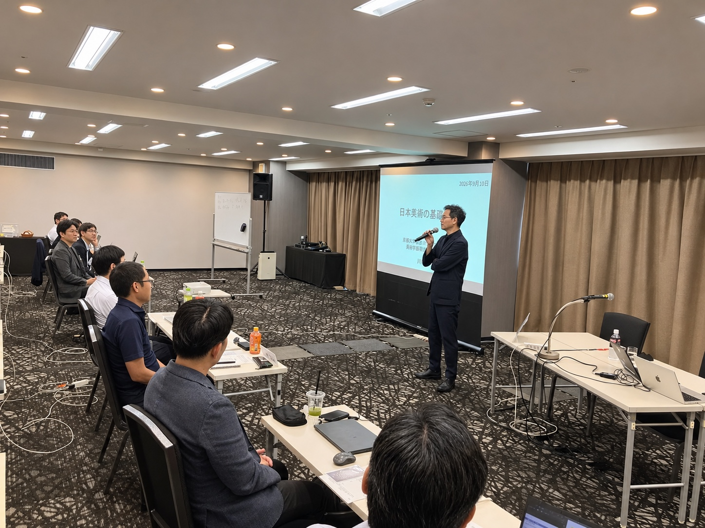

OBSERVE SCOPE
今回ご見学いただけるのは、
チームプロジェクト最終発表会のみです。
翌日のCEOプレゼンテーション準備、コミュニケーション講義、メディア対応などは見学対象に含まれません。
WHY OBSERVE
考え抜いた構想を、
伝わり、動き出す提案へ。
異業種の参加者が、約8か月にわたる共同探究の成果を発表します。異なる経験と視点をどう統合し、経営課題への提案として形にしたのかをご覧いただけます。
発表だけでなく、メンターからの問いや講評を含め、EMCが重視する実践的な学びの密度を確認できる機会です。

最終発表会で確かめられること
共同探究を形にする
チームで積み重ねた議論を、経営への提案としてまとめるプロセスを確認します。
異なる視点を統合する
企業や業界の異なる参加者が、前提の違いを越えて一つの構想をつくる姿に触れます。
問いと講評から磨く
発表後の問いとフィードバックを通じ、提案をさらに深める学び方を確認します。
オブザーブ対象
- 2月12日
- チームプロジェクト最終発表会
担当：一條 和生 氏（IMD教授・一橋大学名誉教授）、パトリック・ラインメラ氏
開催概要
- 見学日
- 2027年2月12日（金）
- 会場
- TKP新橋カンファレンスセンター
- 見学範囲
- チームプロジェクト最終発表会のみ
- 参加費
- 無料
- 主催
- 一般社団法人日本能率協会
本オブザーブは上記の最終発表会のみが対象です。翌日を含むその他の講義・プログラムはご見学いただけません。時間、定員、申込締切などの詳細は申込ページでご確認ください。